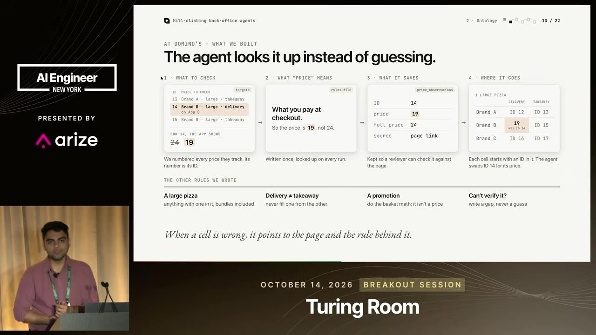
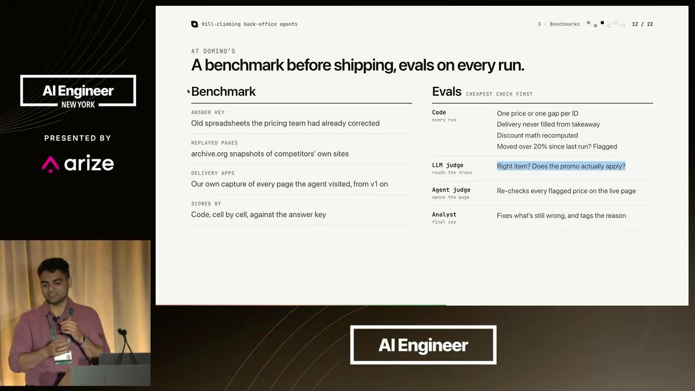
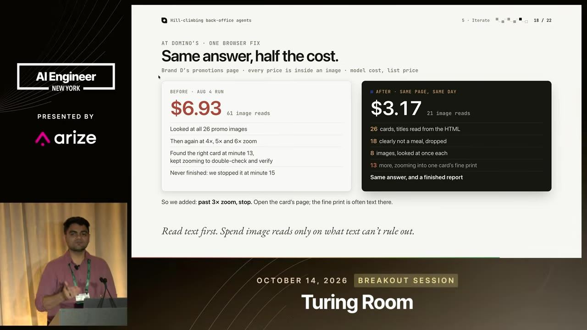

essencial do dia: Um caso com números de versão a versão mostra que definições escritas e evals em camadas rendem mais que trocar de modelo.
Como subir um agente de 41% para 97% de acerto
How We Took an AI Agent From 41% to 97% Accurate
Agente de back-office melhora com definições escritas, evals em camadas e iteração sobre falhas reais, antes de qualquer troca de modelo.
Depois deste talk você consegue montar um ciclo de melhoria para um agente de back-office, com ontologia, evals em camadas e iteração guiada por traces
Em 3 frases
A Brainbase levou um agente que consulta preços de concorrentes da Domino's de 41% para 97% de acerto em 11 versões, só mudando instruções, skills e playbooks.
O método tem seis passos: alinhar o que é sucesso, definir cada termo, montar benchmark e evals, lançar um agente estreito, iterar sobre as falhas e entregar o ciclo inteiro ao cliente.
Cada falha vista no trace virou uma regra ou um caso de teste, como olhar a página inteira em vez da seção do link e consultar o HTML antes de dar zoom em imagens.
Antes de ler
- Baseline linha de base analogia abaixo
- Browser agent agente de navegador analogia abaixo
- Hill climbing melhoria em pequenos passos guiada pela métrica analogia no glossário
- Ontologia de tarefa glossário escrito de termos, fontes e regras que o agente segue
- Benchmark teste padronizado de desempenho analogia no glossário
- Eval avaliação analogia no glossário
Resultado em 11 versões sem trocar de modelo
A versão 1 acertava 41%, custava US$ 2 por fonte e levava 129 minutos por execução. A versão 11 chegou a 97%, US$ 1 por fonte e 71 minutos. A mudança veio de instruções, skills e playbooks. Por isso o palestrante manda corrigir instruções antes de pensar em outro modelo.
 (ampliar imagem)
(ampliar imagem)
Ontologia: toda palavra tem definição escrita
O agente recebe uma tabela de itens-alvo, grava o que viu numa tabela de observações de preço e segue um arquivo de regras. Uma regra veio de falha real: registrar o preço pago no checkout, não o preço riscado. Se a célula está errada, aponta a página e a regra usada. O que não está escrito, o agente chuta.

(ampliar imagem)Três tipos de eval no mesmo agente
Código confere o que é determinístico, como células substituídas e variação de 20% contra a execução anterior. LLM-as-a-judge olha o trace para ver se o item e a promoção certos foram escolhidos. Um agente juiz abre cada preço sinalizado e confirma se o alerta era válido. O analista revisa só o que sobra.

(ampliar imagem)Mais 2 ideias deste talk
Comece estreito e meça desde o dia um
A versão 1 serve para ser medida, não para ser boa. O escopo cresceu de um app, um item e uma cidade para hambúrgueres, entrega e retirada, outro app e outros sites. Cada ampliação veio depois de uma linha de base. Mudar uma coisa por vez deixa claro qual ajuste funcionou.
09:20 A curva mostra a evolução por versão, com acerto subindo e custo caindo.
Falha no trace: o loop de zoom em imagens
Numa página de promoções com preços dentro de imagens, o agente olhou 26 imagens e deu zoom de 4x a 6x. Achou o card certo no minuto 13 e continuou conferindo até ser parado no minuto 15. A regra nova manda ler o HTML primeiro e limitar o zoom. Resultado: um terço das leituras de imagem e custo mais de 50% menor.

(ampliar imagem)Baseline (linha de base). Baseline é como a marca na parede onde você registra a altura de uma criança: sem a primeira marca, ninguém sabe se ela cresceu.
- Baseline (linha de base) é o resultado da primeira medição, feita antes de qualquer melhoria. Ela serve de ponto de comparação.
- Você roda a primeira versão do sistema e anota números simples: acerto, custo e tempo por execução.
- Depois de cada mudança, você mede de novo e compara com esse número inicial. Assim sabe se o ajuste ajudou ou piorou.
- No talk, a versão 1 do agente tinha 41% de acerto, US$ 2 por fonte e 129 minutos por execução. O escopo só cresceu depois que essa linha existia.
Ajuda saber antes: Benchmark, Eval, Agente de IA
Browser agent (agente de navegador). Browser agent é como um assistente de escritório que abre o site do concorrente, procura o produto, confere o preço e anota na planilha.
- Um browser agent (agente de navegador) é um programa que usa um site como uma pessoa usa: abre páginas, clica, rola e lê o que aparece.
- Por trás dele há um LLM (modelo de linguagem) que decide o próximo passo. Cada passo é uma chamada de ferramenta, como clicar ou dar zoom em uma imagem.
- Ele pode ler o texto da página, o HTML ou imagens da tela. Ler imagens custa mais caro e demora mais do que ler o texto.
- No talk, o agente olhou 26 imagens de promoção e deu zoom de 4x a 6x em loop. A regra nova manda ler o HTML primeiro e limitar o zoom, e o custo caiu mais de 50%.
Ajuda saber antes: LLM, Agente de IA, Trace, Prompt
O talk vem da empresa que vende o serviço e usa um único cliente como caso. O palestrante não diz como o acerto de 97% foi medido, qual o tamanho do benchmark nem se o conjunto de teste ficou separado dos casos usados para criar as regras, o que pode inflar o número por overfitting. Os dados de concorrentes mudam com o tempo e o vídeo não mostra a estabilidade do acerto depois do lançamento. A afirmação de que o método serve a outros casos não traz exemplos.
Teste você mesmo
Responda de cabeça antes de abrir. Lembrar com esforço é o que fixa.
- lembrar Quais são os três tipos de avaliação que o talk usa e o que cada um verifica?
Ver resposta
Código verifica o que é determinístico, como células preenchidas e variação de preço. LLM-as-a-judge confere no trace se o item e a promoção certos foram escolhidos. Agente como juiz abre cada preço sinalizado e confirma se o alerta era válido.
- aplicar Você vai automatizar a conciliação de faturas com um agente. Como aplicaria os passos de ontologia e de agente estreito?
Ver resposta
Escreva a definição de cada termo (fatura, vencimento, desconto), a origem de cada dado e o que fazer quando faltar informação. Comece com um fornecedor e um tipo de fatura, meça acerto, custo e tempo como linha de base e só depois amplie o escopo.
- criticar Que informação falta para confiar nos 97% de acerto?
Ver resposta
Falta o tamanho e a composição do benchmark, quem definiu o gabarito e se os casos de teste ficaram separados dos casos usados para escrever as regras. Também falta saber se o acerto se mantém quando os sites mudam. Os dados vêm da empresa que vende o serviço.
Regras e eval em camadas para um agente de preços
Você precisa de: Claude ou ChatGPT, uma planilha e 10 produtos de uma loja online pública
- Liste 10 produtos e anote à mão o preço final pago em cada um. Esse é o seu gabarito.
- Peça ao modelo para ler cada página e preencher uma tabela com preço cheio, preço final e origem, sem nenhuma regra extra.
- Escreva um arquivo de regras com as definições (preço final, promoção, frete) e a instrução de registrar uma lacuna quando não tiver certeza. Rode de novo.
- Compare as duas rodadas com o gabarito e calcule o percentual de acerto de cada uma.
Deu certo se: A segunda rodada acerta mais produtos que a primeira, e cada erro restante aponta para uma regra que falta ou para uma lacuna sinalizada.
O que fazer com isso
- Escreva um arquivo de regras para um agente seu, com a definição de cada termo do domínio e o que fazer quando não souber a resposta.
- Guarde os traces das execuções desde a primeira versão e reserve um caso de falha real para virar teste de regressão.
- Separe seus checks em três grupos: o que o código verifica, o que um LLM julga e o que exige um agente abrindo o artefato.
- Ao corrigir uma falha, mude uma única instrução por vez e meça acerto, custo e tempo antes e depois.
Conversa com outros talks
- Evitar que um conserto de agente quebre outro · 25 out · em comum: Baseline, Eval, LLM-as-a-judge
- Por que montar uma plataforma de eval é difícil · 7 out · em comum: Eval, Hill climbing, LLM-as-a-judge
- Testar agentes como cientista, com evals próprios · 25 out · em comum: Benchmark, Eval, LLM-as-a-judge